Classic Monitor
Übersicht
Die Classic Monitor Android App zeigt Informationen des Classic Ladereglers an. Ihr Laderegler muss mit dem Netzwerk verbunden und entsprechend konfiguriert sein. Zur Konfiguration schlagen Sie bitte im Handbuch zum Laderegler nach. Ihr Android Gerät muss sich auch im gleichen Netzwerk befinden.
Über Port-Weiterleitung eines DDNS (DynDNS) Service kann auch aus dem Internet zugegriffen werden. Hier geben Sie die Adresse / den Domain-Namen Ihres DDNS Service und die in Ihrem Router durchgeleitete Portnummer an. Ein kostenloser DDNS Service wäre www.noip.com, Ihr Router muss diese Funktion und den Service-Betreiber unterstützen.
Die App unterstützt gegenwärtig die Classic & Classic Lite Modelle 150, 200, 250 Laderegler. Die Classic SL Serie wird nicht unterstützt, da diese keine Netzwerkverbindung besitzen. Es werden die Grundfunktionen für die TriStar MPPT Laderegler unterstützt.
Die App zeigt verschiedene Tabs an, abhängig der Konfiguration.
Bei einem oder mehreren Classic ohne einen WhizbangJr, sind die Tabs:
Übersicht | Energie | Temperatur | Protokoll- Kalender | Tages-Diagramm | Stunden-Diagramm | Info | Nachrichten | Über
Bei einem einzelnen Classic mit einem WhizbangJr:
Ladezustand | Last | Übersicht | Energie | Kapazität | Temperatur | Protokoll- Kalender | Tages-Diagramm | Stunden-Diagramm | Info | Nachrichten | Über
Mehrere Classic mit WhizbangJr:
Ladezustand | System | Übersicht | Energie | Kapazität | Temperatur | Protokoll- Kalender | Tages-Diagramm | Stunden-Diagramm | Info | Nachrichten | Über
Beim Morningstar Tri-Star MPPT:
Übersicht | Energie | Über
Bei mehr als einem Laderegler und einem WhizbangJr. wird eine Auswahlmöglichkeit im Kalender und Energie Tab angeboten. Hier kann die erzeugte Energie der Laderegler oder des gesamten Systems (alle Laderegler) eingesehen werden.
Navigationsleiste
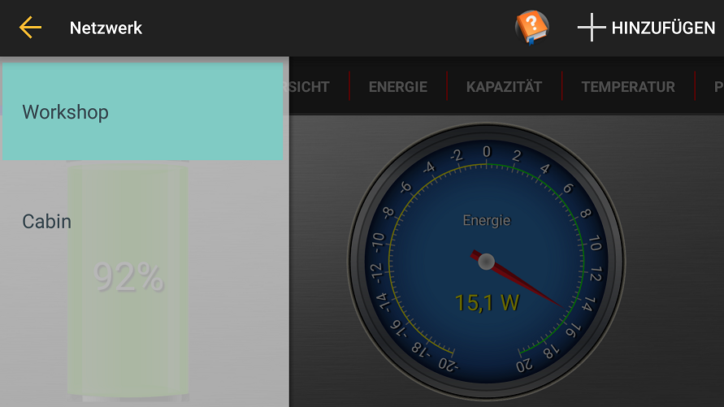Die Navigationsleiste erscheint, wenn man vom linken Rand nach rechts wischt, dann das "Hamburger" Symbol rechts in der Action-Bar antippt.
Jeder eingetragene und von der App überwachte Laderegler wird angezeigt.
Ein Eintrag kann entfernt werden, wenn dieser nach rechts weggewischt wird.
Ein orangenes Symbol mit einem Ausrufezeichen erscheint neben einem Eintrag, wenn die Verbindung nicht aufgebaut werden kann.
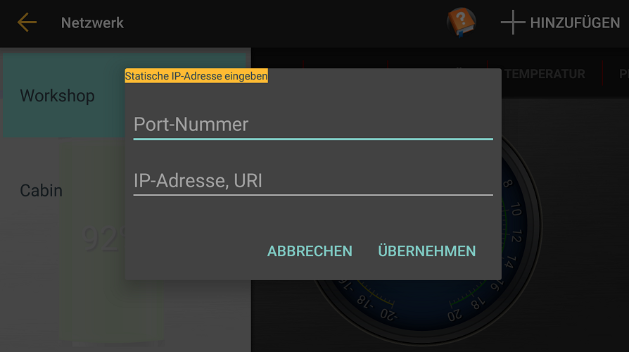
Eine statische Laderegler-Adresse kann durch Auswahl von +ADD hinzugefügt werden. Hier wird die Port-Adresse und Netzwerkname, URL oder IP-Adresse des Ladereglers eingegeben.
Einstellungen

Die Einstellungen erreichen Sie über das "Zahnrad-Symbol" in der oberen rechten Ecke in der Action-Bar.
Classic automatisch erkennen:
Die App erwartet ein UDP Paket für jeden nicht eingetragenen Classic Laderegler
im Netzwerk. Ist die Option nicht ausgewählt, muss jeder Classic manuell
über +ADD eingetragen werden.
Temperaturen in Fahrenheit: Wenn ausgewählt, wird die Temperaturanzeige in Fahrenheit angezeigt.
Zeige Popup-Mitteilungen: Wenn ausgewählt, werden Nachrichten im unteren Bereich als Popup angezeigt.
PV Output

PVOutput: Bei Verwendung der Übermittlung der Daten an PVOutput, wird hier der Key und die SystemId (SID) eingetragen. Die App lädt die Daten der erzeugten Energie (kWh) auf die PVoutput.org Webseite hoch.
Aufgezeichnete Protokolle leeren: Setzt den letzten Zeitpunkt der Datenübermittlung zurück, die App kann nun die Daten der vergangenen 30 Tage wieder hoch laden.
Um den Dienst nutzen zu können, ist eine Anmeldung bei PVOutput.org erforderlich, hier erhalten Sie auch den Key und die SID.
Ein PVOutput Symbol erscheint in der Action-Bar, das Sie auf die Seite von PVOutput.org weiterleitet.
Ladezustand
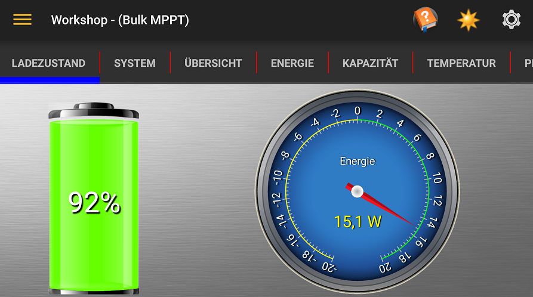Das Ladezustand Tab erscheint nur, wenn ein WhizbangJr. im System vorhanden und konfiguriert ist.
Die Anzeige kann in beiden Richtungen den Strom oder Leistung anzeigen. Zum umschalten die Anzeige antippen. Eine negative Anzeige bedeutet das Entladen der Batterie. Eine positive Anzeige, dass die Batterie geladen wird.
System
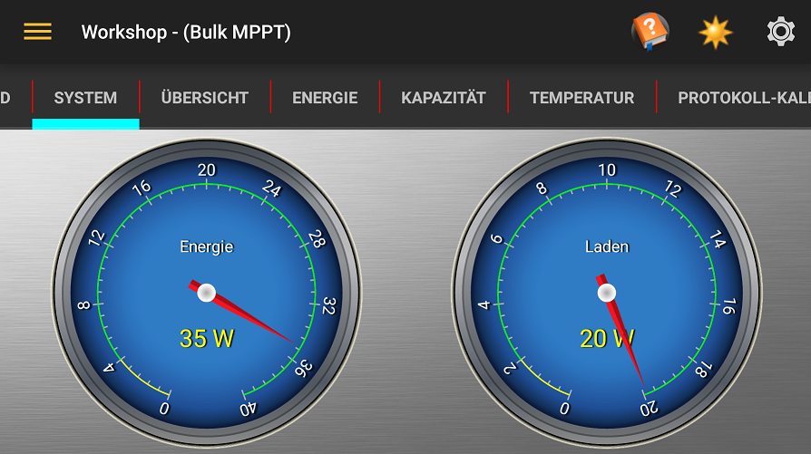Das System Tab wird nur angezeigt, wenn mehr als ein Laderegler gefunden oder eingetragen wurde und mindest einer mit einem WhizbangJr. vorhanden ist.
In der Energie-Anzeige wird die gesamte erzeugte Energie aller Laderegler angezeigt.
In der Verbrauchs-Anzeige wird die entnommene Energie angezeigt. Dies wird von der erzeugten Energie abzüglich der Ladeenergie errechnet.
Verbrauch
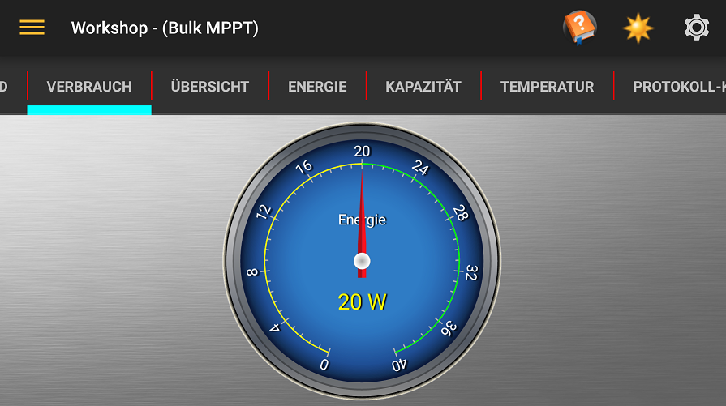In der Verbrauchs-Anzeige wird die entnommene Energie angezeigt. Dies wird von der erzeugten Energie abzüglich der Ladeenergie errechnet.
Übersicht
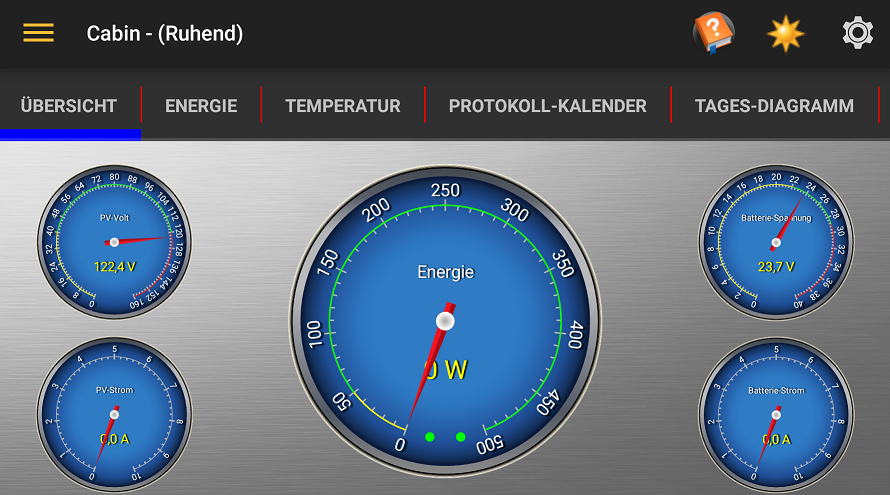Hier sind die Anzeigen für die PV-Spannung (Volt) und PV-Strom, Batterie-Spannung und -Ladestrom, sowie die Energie in Watt, welche von den Solarmodulen gewonnen wird, angezeigt.
In der Hauptanzeige sind auch die "LEDs" der AUX1 (links) und AUX2 (rechts) zu sehen.
Energie
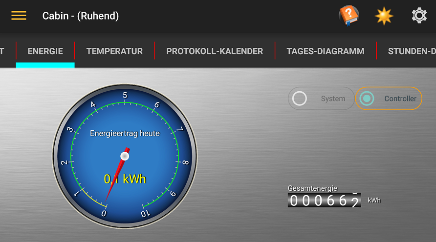Der Energie Tab zeigt die Menge der Energie an, die am aktuellen Tag vom ausgewählten Laderegler umgesetzt wurde und die Gesamtenergiemenge des Ladereglers seit Inbetriebnahme.
Ist mehr als ein Laderegler und ein WhizbangJr vorhanden, wird ein Optionsfeld angezeigt um den Laderegler oder das System (Summe aller Ladereglers) anzeigen zu lassen.
Kapazität
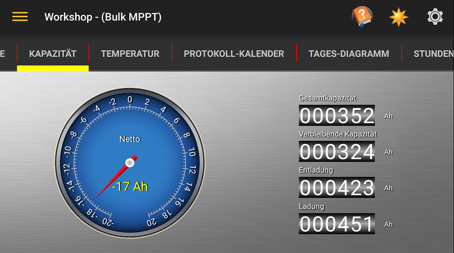Dies zeigt die Kapazität der Batterien und die noch verbleibende Energie der Batterien an.
Weitere Informationen hierzu finden Sie im Midnite Solar WhizbangJr Handbuch.
Tatsächlich-Diagramm

Die Live-Diagramm zeigt den Batterie Volt (rot), Versorgungsstrom (gelb) und einen Zustand der Ladeanzeige . Wenn ein WhizbangJr erkannt wird, wird das Diagramm auch die Batterieladeanzeige / Entladestrom (cyan).
Der Ladezustand (Linie am unteren Rand des Diagramms) Anzeige wie folgt;
- Undefiniert: Weiß
- ruhend: Schwarz (code 0)
- Absorbieren: Orange (code 3)
- BulkMPPT: Grün (code 4)
- Float: Blau (code 5)
- FloatMPPT: Cyan (code 6)
- Angleichen: Rosa (code 7)
- HyperVOC: Rot (code 10)
- EQMPPT: Violett (code 18)
Temperatur
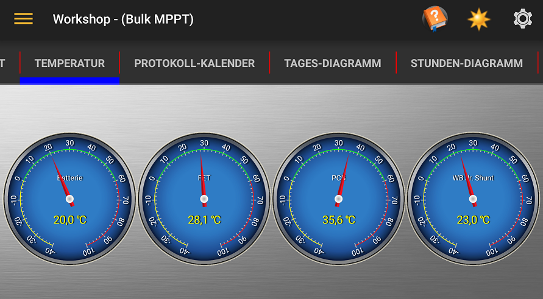Hier werden die verschiedenen Temperaturen in Celsius oder Fahrenheit, der Batterie, internem FET & PCB und, wenn vorhanden, dem WhizbangJr. Shunt, angezeigt.
Tages-Diagramm
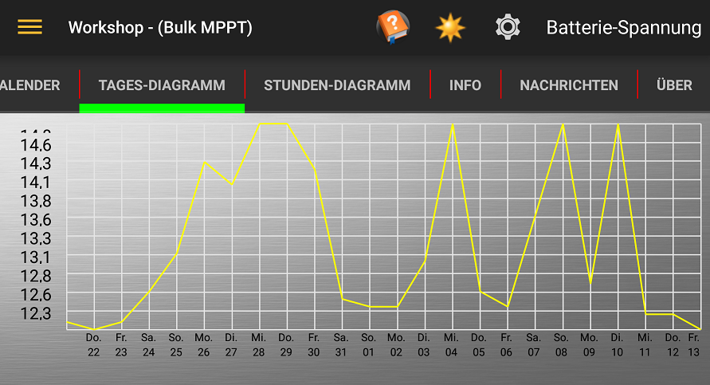Zeigt die Informationen wie im Kalender grafisch an. Über das Menü oben rechts in der Action-Bar kann man einzelne Werteanzeigen auswählen.
Stunden-Diagramm
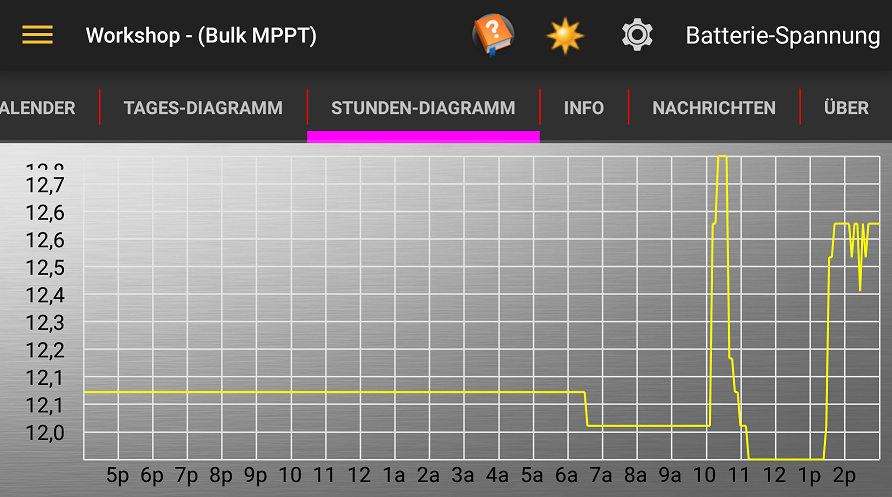Zeigt die Daten des aktuellen Tags an. Über das Menü oben rechts in der Action-Bar kann man einzelne Werteanzeigen auswählen.
Protokoll-Kalender
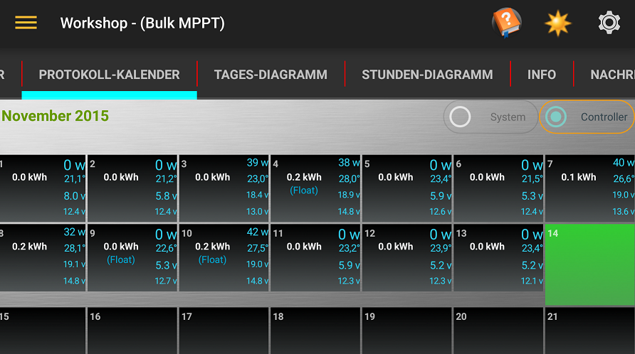Hier finden Sie die gespeicherten Daten pro Tag, monatsweise als Kalender
dargestellt.
Höchste PV, Batteriespannung, höchste Temperatur und Energie vom Tag.
Wenn der Kalender nicht vollständig auf dem Bildschirm angezeigt wird, kann er durch verschieben im schwarzen Bereich verschoben werden.
Vorangegangene Monate können eingesehen werden, wenn der graue Bereich hoch/runter geschoben wird.
Info
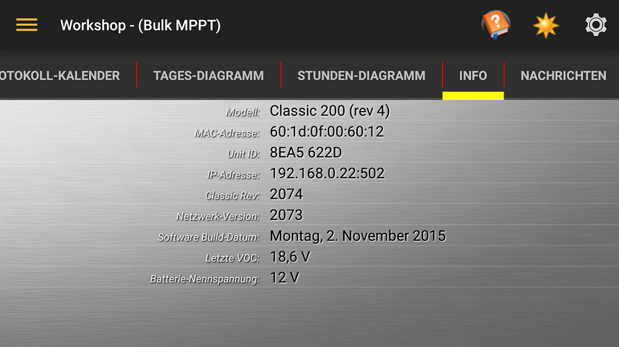Zeigt detaillierte Informationen des Ladereglers, die letzte VOC und die Batteriespannung an.
Nachrichten

Hier werden informell, Warnungen und Fehler vom Laderegler durch ein Symbol am Anfang der Nachricht angezeigt.